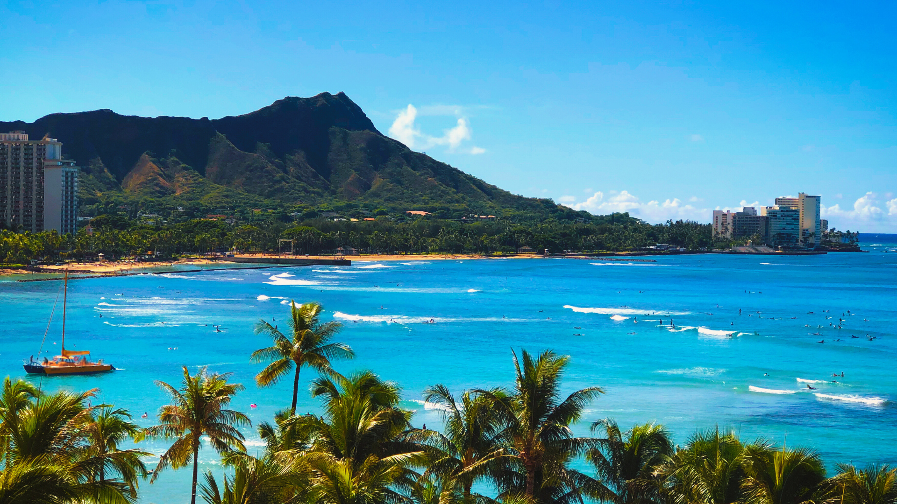

Oahu is the third largest Hawaiian island & sometimes called "The Gathering Place."
Living up to its name, it's a fusion of bustling city life and laidback surf towns.
Its capital is Honolulu & home to unique ancient & world history. Oahu's diverse tropical terrain,
unmatched ocean views & wide range of activities will bring out your adventurous side.
Must-See Spots
Waikiki Beach
Iolani Palace
Pearl Harbor National Memorial
Bishop Museum
Diamond Head State Monument
Visitor Tips
Take time to learn about the culture, values & etiquette of Hawaii. You'll have a much better understanding of the islands & a more authentic experience here.
Arrive early to hiking trails as parking spots fill up quickly.
Prioritize sun protection, so bring sunscreen and reapply every 4 hours. The sun is beaming here!
Check weather conditions regularly because you don't want to risk your life in Oahu's wilderness & beaches.
Mina
"Toro's blog on Oahu helped me plan an adventurous excursion to the island. Without his guidance my trip would not have been as fulfilling.
Thank you for sharing your travelling expertise with us."

Waikiki Beach along with Diamond Head make up Oahu's iconic view.